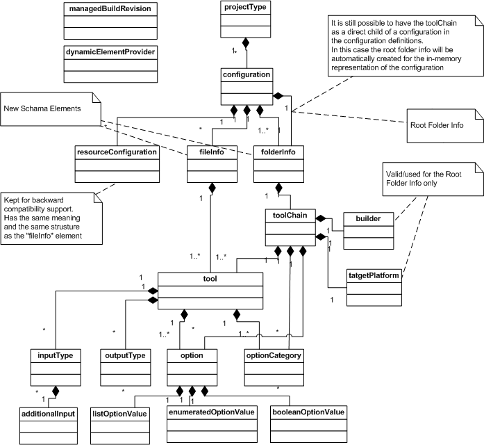
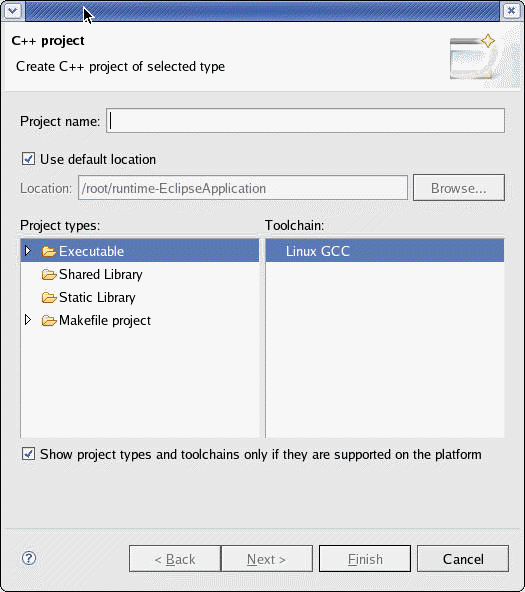
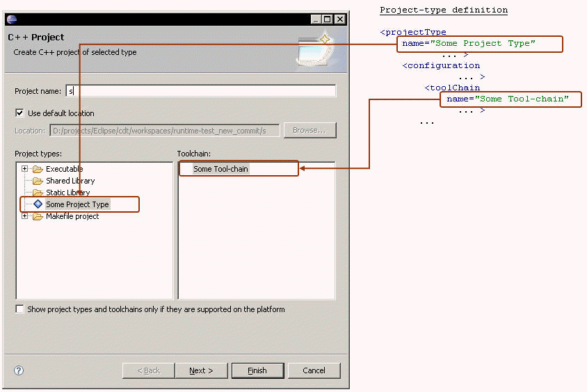
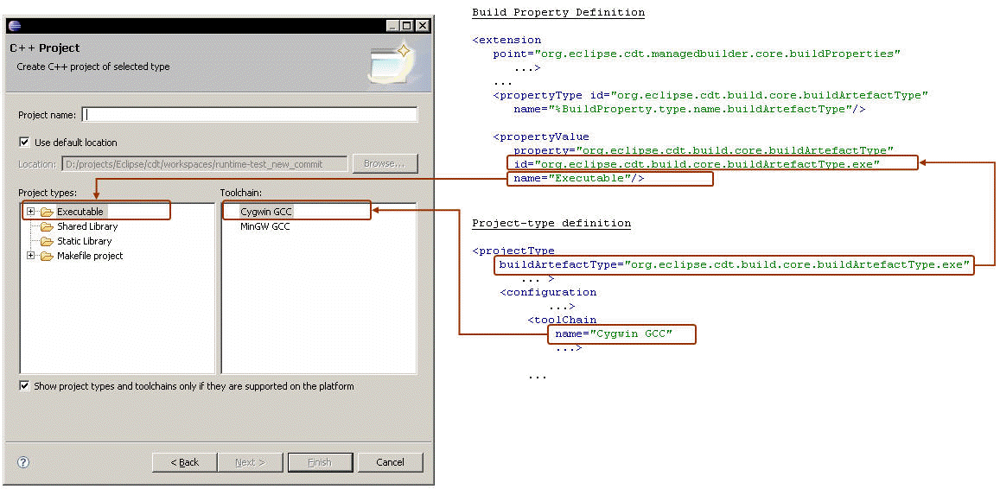

This document outlines the new features presented in the new CDT build system in CDT 4.0

| What's New in CDT
Build System 4.0 This document outlines the new features presented in the new CDT build system in CDT 4.0 |
|
| Authors |
| Mikhail Sennikovsky |
| Revision Date |
| 06/21/07 - Version 4.0 |
| Change History |
| 4.0 - Document Creation |
The document highlights the new features that were introduced in the New CDT Build System 4.0 from the ISV point of view. The document mostly focuses on the API details rather than on UI ones.
The document should be useful for ISVs willing to migrate or integrate their tool-chains to the CDT 4.0 and should serve as as a valuable addition to the the Migration Guide document, although despite of the Migration Guide it mostly focuses on highlighting feature details rather than on the migration problems. Please also refer to the Migration Guide document for additional detail on migration to the 4.0
The CDT 4.0 introduces a lot of Build System functionality updates. The list of the new features is given below:
2.1 Standard and Managed Build System incorporation
In CDT 4.0 Standard and Managed Build Systems are incorporated into one CDT Build System. This allows all Standard Make features to be used for the Managed Build Projects and vice a versa and also provides one common API and UI interface for the build settings.
The CDT Build System is created based upon the Managed Build System functionality (org.eclipse.cdt.managedbuilder.core and org.eclipse.cdt.managedbuilder.ui plug-ins). So all the API that were used for the Managed Build Projects in the CDT 3.x becomes valid for the Makefile Projects in the 4.0, i.e
The org.eclipse.cdt.managedbuilder.core.buildDefinitions extension point serves as an entry-point for the tool integration into the Build System.
The org.eclipse.cdt.managedbuilder.core.ManagedBuildManager class serves as an entry-point for accessing/manipulating the Build Settings information.
From the API point of view there is no principal difference between the Makefile and Managed Build Projects. From the Build System perspective the difference between the "Makefile" and the "Managed" modes is that in case of the Managed build the makefile generation is performed (or the Internal Builder is used), while for the Makefile Build no makefile generation is done, so it is expected that the makefile is supplied by the user. Switching between the Managed and the Makefile modes is actually switching the Makefile generation either on or off.
A toolChain, tool, builder definitions now have have the "supportsManagedBuild" property to specify whether or not the managed build is supported for the given object.
2.1.1 Build Definitions Model schema
The figure below shows a UML model of the schema elements. It is simplified by leaving out the fact that the configuration, toolChain, tool, targetPlatform, and builder definition elements can be defined at the top level in a manifest file.

The CDT 4.0 presents a new New Project Wizard. This section primarily focusing and describing the ways a tool-integrator can influence on how his/her tool-chains and project types are presented in the wizard on the first wizard page. Please refer to the "New Project Wizard" user description for more detail on the New Project Wizard UI.
The first wizard page presents the wizard allows user to select a project type and tool-chain(s) to be used with the project type.

Presenting project-types and tool-chains in the New Project Wizard
A tool-integrator has two options of presenting his project-types in the wizard.
NOTE: The new New Project Wizard now operates with tool-chains allowing to select the tool-chain(s) to be used on project creation. Thus it is required that all toolChain/tool/builder build definitions representing different tool-chains/tools/builders must have different names as well as toolChain/tool/builder build definitions representing one and the same tool-chain/tool/builder must have identical names.
Example: to illustrate the above requirement here is how this is handled in the gnu tool-chain definitions:
The gnu plug-in contains the gcc linker tool on Linux is defined as
<tool
natureFilter="cnature"
name="%ToolName.linker.gnu.c"
outputFlag="-o"
command="gcc"
id="cdt.managedbuild.tool.gnu.c.linker"
...
At the same time the gnu tool-chain definitions refers to the gcc linker by defining a new tool as a super-class of the "cdt.managedbuild.tool.gnu.c.linker" tool
<tool
id="cdt.managedbuild.tool.gnu.c.linker.base"
superClass="cdt.managedbuild.tool.gnu.c.linker">
...
Both tool definitions listed above are actually treated as two different tools by the Build System, while both of them refer to one and the same "gcc" executable. To make the build system aware that both tool definitions refer to one and the same tool/executable it is required that both tool definitions specify one and the same name. In the above sample the tool of id="cdt.managedbuild.tool.gnu.c.linker.base" does not specify any name thus making the name to be inherited from the super-class tool, so both tools have the same name.
On the other hand the cygwin gcc linker is defined as
<tool
id="cdt.managedbuild.tool.gnu.c.linker.cygwin"
name="%ToolName.linker.cygwin.gnu.c"
superClass="cdt.managedbuild.tool.gnu.c.linker">
...
although the tool definitions is defined as a super-class of the linux gcc linker, it refers to the different tool(executable) than the Linux linker definition. The cygwin linker definition specifies the name="%ToolName.linker.cygwin.gnu.c" that differs from the one defined by the Linux gcc linker.
Defining new Project Type entries
In case a tool-integrator is willing his/her project type to be displayed as separate entries with custom names, his project-type definition must specify a "name" property for the project-type, e.g.

When the project type entry is selected in the wizard the "Toolchain:" pane will display the list of tool-chains defined/associated with the project type
Using general project type entries
The "general project types" mechanism allows grouping multiple project types/tool-chains under one project-type entry thus ensuring the compactness of the project-type information and ensuring a common user experience across different tool-chains and integrations. When the general project type entry is selected the "ToolChains:" pane will list all tool-chains contributed from different project types allowing user to select the tool-chain to be used with the given project-type.
What are the general project type entries?
The general project type entries mechanism is made based upon the new Build Properties mechanism introduces in the new CDT Build System. Each general project type entry is a value of the "buildArtefactType" property which represents the build artifact type. The New Project wizard searches for the tool-chains supporting each of the defined build artifact types and displays them in the "ToolChains:" pane for each of the build artifact type.
CDT pre-defines the following values of the build artifact type property:
"org.eclipse.cdt.build.core.buildArtefactType.exe" - to represent executable
"org.eclipse.cdt.build.core.buildArtefactType.staticLib" - to represent static library
"org.eclipse.cdt.build.core.buildArtefactType.sharedLib" - to represent shared library
ISVs can define their own custom build artifact values by contributing to the org.eclipse.cdt.managedbuilder.core.buildProperties extension point.
See the "Build Properties" section for more detail on the Build Properties mechanism.
Contributing to the general project type entries
The minimal steps needed to specify that the general project type entry should be used, a project-type definition should specify the "buildArtefact" attribute and assign it to one of the values of the buildArtefactType build property, e.g.
<projectType
buildArtefactType="org.eclipse.cdt.build.core.buildArtefactType.exe"
id="cdt.managedbuild.target.gnu.exe">
...

2.3 Multi-configuration support for makefile projects
The new CDT Build System supports multiple configuration settings. This is applicable for the Managed and Makefile projects now. As with the Managed projects the org.eclipse.cdt.managedbuilder.core.IConfiguration interface serves as a holder of the configuration settings.
2.4 Tool-chain support for makefile projects
The new CDT Build System provider the notion of the tool-chain/tool/builder definitions. The tool-chain are used for the Makefile projects as holders/profiles containing/grouping different settings applicable for the given tool-chain thus allowing the project seyttings to be automatically configured based upon the tool-chain being used. This includes adjusting error parser, binary parser settings, scanner discovery profile settings, etc.
It is now possible to specify custom settings on the per-folder level. It is as well possible to exclude folders from build. A new interface folderInfo schema element is presented. See the buildDefinitions model above for more detail.
It is now possible to use the Internal Builder in the tool-chain definitions. The Internal Builder is treated as a regular builder by the Build System. To associate the Internal Builder with the tool-chain the tool-chain should define the builder specifying the Internal Builder as its super-class via a builder#superClass attribute. The Internal Builder id is "org.eclipse.cdt.build.core.internal.builder". E.g.
<builder
id="cdt.managedbuild.tool.gnu.builder.mingw.base"
...
superClass="org.eclipse.cdt.build.core.internal.builder"> <- setting the Internal Builder id as a super-class ID specifies that the Internal Builder will be used
</builder>
...
2.7 Customized configuration builds
It is now possible to initiate the project build that will use customized settings that differ from those of the currently active configuration.
The following modes are supported:
Building any number of project build configurations with one build request
Building any number of configurations with builder settings customized
This functionality can be used programmatically via the org.eclipse.cdt.managedbuilder.core.ManagedBuildManager.buildConfigurations(...) methods.
It is also accessible in UI via the "Build Configurations" -> "Build" project context menu.
NOTE: For Managed builds (makefiles are generated automatically) this functionality works only in case the buildfile generator implements the org.eclipse.cdt.managedbuilder.makegen.IManagedBuilderMakefileGenerator2. This interface extends the old IManagedBuilderMakefileGenerator by defining a new initialize() method which accepts IConfiguration and IBuilder rather than IManagedBuildInfo thus removing an assumption that only active configuration can be used for building.
The default GnuMakefileGenerator supplied with the CDT now implements this interface, so in case the builder is using this default implementation, no changes are needed.
2.8 Make Target Build for Managed Build Projects
As a result of combining the features of old Managed and Standard Build systems, the make target build is now available for Managed Projects also.
Internally it is actually treated as a special case of the Custom configuration build (see the "Custom configuration builds" section).
The CDT Build System now allows changing tool-chains used in the configurations for the already created projects.
The following modifications are supported
| Modification type | Possible levels of modifications |
| Changing/substituting the entire tool-chain |
|
| Adding/removing tools to the tool-chain currently used |
|
| Changing builder |
|
To make the tool-chain modification mechanism work properly a tool-integrator is responsible for providing an information that would allow to preserve/adjust the necessary settings while conversion. There are several mechanisms that could be used for these purposes.
Specifying a tool-chain/tool converter
Specifying build properties supported and enablement expressions for automatic settings adjustment. (See the "Build Properties mechanism" section for detail on the Build Properties mechanism)
When the tool-chain modification is performed the Build System checks whether there mechanism is performed in the following
In case there is an appropriate converter defined that could be used for conversion, the converter is used while modification
Otherwise the Build properties mechanism is used. In this case settings adjustment is performed based upon adjustment expressions defined for the tool-chain/tools and the set of build properties associated with the configuration. (See the "Build Properties mechanism" section for detail on the Build Properties mechanism)
NOTE: In order to function properly the tool-chain modification functionality requires that all toolChain/tool/builder build definitions representing different tool-chains/tools/builders must have different names as well as toolChain/tool/builder build definitions representing one and the same tool-chain/tool/builder must have identical names.
Example: to illustrate the above requirement here is how this is handled in the gnu tool-chain definitions:
The gnu plug-in contains the gcc linker tool on Linux is defined as
<tool
natureFilter="cnature"
name="%ToolName.linker.gnu.c"
outputFlag="-o"
command="gcc"
id="cdt.managedbuild.tool.gnu.c.linker"
...
At the same time the gnu tool-chain definitions refers to the gcc linker by defining a new tool as a super-class of the "cdt.managedbuild.tool.gnu.c.linker" tool
<tool
id="cdt.managedbuild.tool.gnu.c.linker.base"
superClass="cdt.managedbuild.tool.gnu.c.linker">
...
Both tool definitions listed above are actually treated as two different tools by the Build System, while both of them refer to one and the same "gcc" executable. To make the build system aware that both tool definitions refer to one and the same tool/executable it is required that both tool definitions specify one and the same name. In the above sample the tool of id="cdt.managedbuild.tool.gnu.c.linker.base" does not specify any name thus making the name to be inherited from the super-class tool, so both tools have the same name.
On the other hand the cygwin gcc linker is defined as
<tool
id="cdt.managedbuild.tool.gnu.c.linker.cygwin"
name="%ToolName.linker.cygwin.gnu.c"
superClass="cdt.managedbuild.tool.gnu.c.linker">
...
although the tool definitions is defined as a super-class of the linux gcc linker, it refers to the different tool(executable) than the Linux linker definition. The cygwin linker definition specifies the name="%ToolName.linker.cygwin.gnu.c" that differs from the one defined by the Linux gcc linker.
2.10 Build Properties mechanism
The Build Properties mechanism allows defining a set of properties along with the possible property values for each property.
It is possible to associate some set of properties with the configuration/project type.
The tool-chains and tools in their turn are allowed to specify the set of supported properties and their supported values for those properties.
Given these capabilities the Build Properties mechanism is used to facilitate the following functionality:
The New Project Wizard is now now creating the set of "general" project type entries based upon the available values for the "org.eclipse.cdt.build.core.buildArtefactType" build property and allows associating tool-chains with those project type entries given the information on the build artefact type values supported by the tool-chains and defined for the project types.
With the tool-chain modification functionality tool-chains, tools and builders can use the build properties mechanism to adjust their settings (e.g. option values for tools, etc. ) using enablement expressions mechanism. This allows easy tool-chain/tool/builder switching without the necessity to implement a converter. Having this mechanism it is possible to define tools whose default option values will depend on the set build properties associated with the configuration. Thus it is possible to have one tool-chain definition whose values will be automatically adjusted depending on whether the tool-chain is being used to create executable or library, etc. or depending on whether the tool-chain is used in the "release" or "debug" build, etc.
It is now possible to change the build artifact type of the already created project by changing the value of the buildArtefactType property in case the tool-chain supports that.
Defining new Build Properties and their values
Build Properties are defined with the org.eclipse.cdt.managedbuilder.core.buildProperties extension point. Please refer to the extension point description for the detailed info on extension point schema.
The Build Property definition consists of the property ID, a human-readable property name and the set of values this property supports.
The property value definition in its turn consist of the value id and a human-readable value name.
<extension
id="baseProperties"
name="Base Build Properties Definition"
point="org.eclipse.cdt.managedbuilder.core.buildProperties">
<propertyType id="org.eclipse.cdt.build.core.buildType" name="%BuildProperty.type.name.buildType"/>
<propertyType id="org.eclipse.cdt.build.core.buildArtefactType" name="%BuildProperty.type.name.buildArtefactType"/>
<propertyValue
property="org.eclipse.cdt.build.core.buildType"
id="org.eclipse.cdt.build.core.buildType.debug"
name="%BuildProperty.value.name.debug"/>
<propertyValue
property="org.eclipse.cdt.build.core.buildType"
id="org.eclipse.cdt.build.core.buildType.release"
name="%BuildProperty.value.name.release"/>
<propertyValue
property="org.eclipse.cdt.build.core.buildArtefactType"
id="org.eclipse.cdt.build.core.buildArtefactType.exe"
name="%BuildProperty.type.name.executable"/>
<propertyValue
property="org.eclipse.cdt.build.core.buildArtefactType"
id="org.eclipse.cdt.build.core.buildArtefactType.staticLib"
name="%BuildProperty.type.name.staticLibrary"/>
<propertyValue
property="org.eclipse.cdt.build.core.buildArtefactType"
id="org.eclipse.cdt.build.core.buildArtefactType.sharedLib"
name="%BuildProperty.type.name.sharedLibrary"/>
</extension>
The values are defined separately from the property, so it is possible for the property values set to be customized and extended by an ISV.
The Build System will pre-define some common general build properties listed in the table below and the set of values for each of those properties, but it will be possible for the tool-integrators to define their own properties as well as to add some new custom values to the already defined properties.
Build System-predefined properties
|
Property id |
Description |
Pre-defined Values |
|
org.eclipse.cdt.build.core.buildArtefactType |
Represents the type of the build artifact built by this project-type, configuration |
org.eclipse.cdt.build.core.buildArtefactType.exe (Executable)
org.eclipse.cdt.build.core.buildArtefactType.sharedLib (Shared Library)
org.eclipse.cdt.build.core.buildArtefactType.staticLib Static Library |
|
org.eclipse.cdt.build.core.buildType |
Represents the build type for this configuration |
org.eclipse.cdt.build.core.buildType.debug (Debug)
org.eclipse.cdt.build.core.buildType.release (Release) |
|
|
|
|
Automatic tool settings adjustment with Build Properties
Tool-chain ant tool definitions can specify enablement expressions to make their default settings be automatically adjusted depending on the value of Build Properties, other options, Strings, etc.
Below is the snippet of the gcc compiler tool definition that specifies dynamic option value adjustment depending on the "buildType" property value.
<option
name="%Option.Posix.DebugLevel"
...
valueType="enumerated">
...
<enablement
type="CONTAINER_ATTRIBUTE" <- specifying that enablement is applicable for the option attribute
attribute="value" <- attribute name the enablement is applicable to
value="gnu.c.debugging.level.none" <- the value that is to be assigned to the attribute in case enablement expression is true
extensionAdjustment="false"> <- specifying that enablement is applicable for non-extension (project) elements
<checkBuildProperty <- evaluates the build property value. treated as true if the property value equals to the one defined in the value attribute
property="org.eclipse.cdt.build.core.buildType" <- property id of the property to be checked
value="org.eclipse.cdt.build.core.buildType.release"/> <- expected property value id
</enablement> <- in case the buildType property value is "release" debugging level is set to "none"
<enablement
type="CONTAINER_ATTRIBUTE"
attribute="value"
value="gnu.c.debugging.level.max"
extensionAdjustment="false">
<checkBuildProperty
property="org.eclipse.cdt.build.core.buildType"
value="org.eclipse.cdt.build.core.buildType.debug"/>
</enablement> <- in case the buildType property value is "debug" debugging level is set to "max"
</option>
For more information on using enablement expressions please refer to the description of the org.eclipse.cdt.managedbuilder.core.buildDefinitions extension-point.
Specifying the set of supported build properties
The tool-chain modification and New Project Wizard mechanisms need to know the set of build properties each tool/tool-chain support for filtering incompatible tools/tool-chains.
Specifying the set of supported build properties for tools.
There are several options of how the tool can specify the build properties supported
A tool can specify a "supportedProperties" element listing all properties and property values supported, e.g.
<supportedProperties>
<property id="org.eclipse.cdt.build.core.buildType">
<value id="org.eclipse.cdt.build.core.buildType.debug"/>
<value id="org.eclipse.cdt.build.core.buildType.release"/>
</property>
</supportedProperties>
In case the "supportedProperties" element is not specified the supported properties will be automatically calculated: all build properties referenced in the tool's enablement expressions will be treated as supported
Specifying the set of supported build properties for tool-chains.
All build properties and their values supported by the tool-chain's tools will be treated as supported by the given tool-chain.
A tool-chain may specify additional supported properties and property value
A tool-chain can specify a "supportedProperties" element listing additional properties and property values supported in the same way as for tool elements, e.g.
In case the "supportedProperties" element is not specified but the tool-chain contains enablement expressions, all build properties referenced in the tool-chain's enablement expressions will be treated as supported
Assigning the set of build properties for configurations/project-types
Once the tools/tool-chains has specified the setting adjustment expressions it is possible to use one and the same tools in different configurations and project types without a necessity to override/specify any project-type/configuration-specific options, e.g. debug level, optimization level, etc.
For this purpose it is possible to assign the set of build properties and their values for project-types and configurations
<projectType
buildArtefactType="org.eclipse.cdt.build.core.buildArtefactType.exe" <- the project-type level build properties will be applied for all configurations. The buildArtefactType is a convenience attribute that allows to specify the value for the "buildArtefactType" property.
It is possible to specify the "buildProperties" attribute for the project type and define the set of build properties there in the same way as for configuration (see below)
.......>
<configuration
...
buildProperties="org.eclipse.cdt.build.core.buildType=org.eclipse.cdt.build.core.buildType.debug" <- defines/assigns the set of build properties for the configuration in the form of comma-separated list of <property_id>=<property_value_id> pairs
cleanCommand="rm -rf">
<toolChain
.....>
...
<tool <- note that we are not defining any configuration specific options here (debug level, optimization level, etc.) Those option values will be automatically adjusted based upon enablement/adjustment expressions defined for the tool's options and the set of build properties and their values assigned for the configuration
id="cdt.managedbuild.tool.gnu.c.compiler.exe.debug"
superClass="cdt.managedbuild.tool.gnu.c.compiler.base">
</toolChain>
The folderInfo is a new element presented in 4.0. The element represents the per-folder settings
| Property | Description | Default Value |
| resourcePath | Project-relative resource path |
value is required |
| exclude | Specifies whether the resource is excluded from building in the parent configuration. The default is false. The resourceConfiguration element retains its tool children, if any exist, even when excluded from the build. |
false |
This element has the same meaning as the resourceConfiguration element. It is added for consistency with the folderInfo element. The only difference between this element and the resourceConfiguration is that resourceConfiguration specifies the resource full path, while the fileInfo specifies project-relative resource path in the same way as the folderInfo does.
| Property | Description | Default Value |
| resourcePath | Project-relative resource path |
value is required |
| exclude | Specifies whether the resource is excluded from building in the parent configuration. The default is false. The resourceConfiguration element retains its tool children, if any exist, even when excluded from the build. |
false |
| rcbsApplicability | Identifies how the user desires to apply a resource custom build step: 1. Apply rcbs tool before any other tools defined for the resource. 2. Apply rcbs tool after any other tools defined for the resource. 3. Apply rcbs tool overriding any other tools defined for the resource. 4. Disable (don't apply) the rcbs tool. |
disable |
| toolsToInvoke | Identifies which tools to invoke by a semicolon separated list of child tool ids. Applies as follows: 1. Defaults to all tools in the order found 2. Use specified ordered list of children to invoke 3. If empty string, treat as if no resource configuration existed, i.e., use project level tool. |
all tools in the order found |
Note: the default value is used ONLY in case the property is undefined for all tool-chain's super-classes
| Property | Description | Default Value |
| supportsManagedBuild | specifies whether the managed build is supported by the tool-chain |
true |
| Property | Description | Default Value |
| supportsManagedBuild | specifies whether the managed build is supported by the tool |
true |
| Property | Description | Default Value |
| languageId | the id of the org.eclipse.cdt.core.language
extension point specifying the language for resources represented with
the input type The value of this attribute is used only in case languageInfoCalculator is not specified |
none |
| languageInfoCalculator | Specifies the name of the class that
implements org.eclipse.cdt.managedbuilder.core.ILanguageInfoCalculator
for dinamic providing the language id info. Overrides language id specified with the languageId attribute. |
none |
| scannerConfigDiscoveryProfileId | Specifies an id of scanner configuration discovery profile for gathering the built-in compiler settings for resource type presented with this input type. | the value of the scannerConfigDiscoveryProfileId defined for the tool-chain |
| Property | Description | Default Value |
| parallelBuildCmd | specifies the "parallel build" builder
option. If the builder supports specifying custom number of parallel jobs, the option definition may contain "*" the Build System sill substitute the "*" with the number of parallel threads to be used. |
none |
| ignoreErrCmd | specifies the "ignore error" builder option. | none |
| cleanBuildTarget | represents the build target to be used for clean build | clean |
| incrementalBuildTarget | represents the build target to be used for incremental build | all |
| autoBuildTarget | represents the build target to be used for auto build | all |
| supportsManagedBuild | Specifies whether the duilder supports managed build. Default value is true. | true |